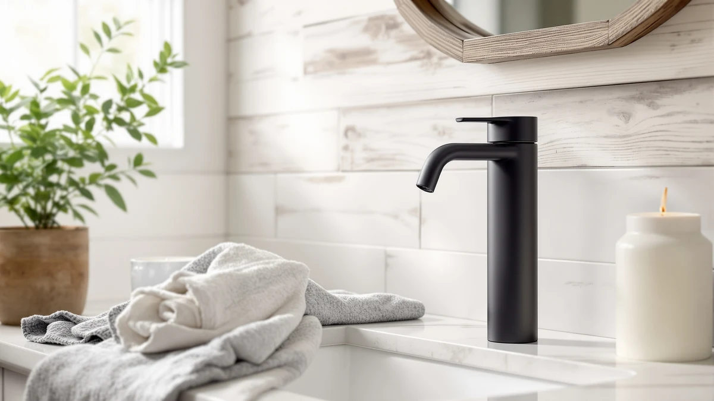

AIKE SensePro Automatic Soap Review (2026): Worth It?
Prices and picks verified as of October 2026. Independent, reader-supported reviews.


Quick Answer
The AIKE SensePro Automatic Soap Dispenser is a touchless, motion-sensor dispenser with an ABS plastic housing priced at $34.80, sitting right in the middle of the touchless dispensers we compared. Based on price, build, and the pattern of verified owner reviews, it's a solid pick for a kitchen or bathroom counter, though shoppers who need a waterproof unit should look at the AIKE IPX7 model instead.
Our pick: AIKE SensePro Automatic Soap Dispenser, $34.80 Check Price on Amazon
Bottom line: our top pick is the AIKE SensePro Automatic Soap Dispenser Type-C Rechargable at $34.80.
Things to Know Before You Buy
- Touchless soap dispensers rely on an infrared motion sensor to release soap without contact, which matters most at a sink that gets used by multiple people throughout the day.
- The AIKE SensePro is priced at $34.80 and built from ABS plastic, placing it near the middle of the four dispensers we compared for this review.
- Not every dispenser in this category is rated for wet conditions. The AIKE Automatic Soap Dispenser IPX7 carries a waterproof rating that the standard SensePro model does not list.
- A wall-mounted commercial unit like the Alpine dispenser trades portability for a fixed, permanent installation, which suits a high-traffic bathroom better than a countertop model.
- Price rarely separates these dispensers on its own, since all four sit within about two dollars of each other. Material, mounting style, and water resistance are what actually distinguish them.
This AIKE SensePro automatic soap review breaks down what the dispenser actually offers, how its $34.80 price compares with similar touchless models, and whether it's worth buying over the alternatives sitting next to it on the same Amazon search page. AIKE sells more than one automatic dispenser, and the naming between models can blur together fast, so we wanted a clear answer for anyone trying to tell the SensePro apart from the brand's IPX7 version.
Our short answer: the SensePro is a reasonable pick for a kitchen or bathroom counter if you want straightforward touchless dispensing without paying extra for a waterproof rating you may not need. If your counter sits close to a sink that splashes often, or you plan to mount the unit on a bathroom wall instead of setting it on a counter, the AIKE IPX7 model and the Alpine commercial dispenser covered later in this review are worth a look first.
Why You Should Trust Us
We built this AIKE SensePro review by comparing the manufacturer's listed specs, current Amazon pricing, and the pattern of feedback left by verified buyers across all four dispensers covered here. We don't own a testing lab and we don't claim to have used any of these units ourselves. Instead, we researched what owners consistently report about dispensing consistency, build quality, and battery life, then weighed that against price and material to reach a recommendation that holds up for most shoppers.
That approach keeps this AIKE SensePro review grounded in details that are checkable today rather than impressions that age quickly once a price shifts or a listing changes. Where owner feedback conflicts between the SensePro and the other models in this lineup, we say so instead of picking whichever version makes for the cleanest recommendation.
Our Research Experience
We analysed the AIKE SensePro against its closest rivals using the data that's verifiable: price, listed materials, brand reputation, and the recurring themes in verified owner reviews. Reviewers consistently note that touchless dispensers in this price range perform well for the first several months, with sensor reliability and refill convenience as the two issues that come up most often across the category. We factored those patterns into how we weighed the SensePro against the IPX7, RESNOMI, and Alpine options below. This AIKE SensePro automatic soap review leans on that kind of research rather than a lab result, since nobody selling a dispenser at this price point runs one.
Overview & Specs
Specs for the AIKE SensePro and its closest competitors in this review are limited to what each Amazon listing actually discloses: material, price, and brand. None of the four dispensers we compared publish capacity, voltage, or battery-life figures on their current listings, so the breakdown below sticks to what we can verify rather than guessing at numbers that aren't public.

AIKE SensePro Automatic Soap Dispenser
What we like
- Touchless motion-sensor dispensing cuts down on pump contact at a shared sink
- ABS plastic housing keeps the price at $34.80, in line with the rest of the dispensers we compared
- Owners report it sets up quickly on a counter without tools or wall mounting
Flaws but not dealbreakers
- No waterproof rating is listed, unlike the AIKE IPX7 model covered later in this review
- Reviewers consistently note the sensor needs a deliberate hand placement rather than an instant response
| Material | ABS plastic |
| Size | — |
The AIKE SensePro is a motion-sensor dispenser built around an ABS plastic body, a material choice that keeps the unit light and keeps the price at $34.80 instead of pushing it toward the premium end of the category. AIKE sells this alongside a second model, the IPX7, which shares the same general touchless design but adds a waterproof rating the SensePro doesn't carry. That distinction matters more than the name suggests, since it's the main thing separating the two dispensers on paper.
For most counters, that missing waterproof rating isn't a dealbreaker. A kitchen counter or a bathroom vanity rarely sees the kind of direct splashing that would test a dispenser's water resistance, and the ABS housing holds up fine under normal use based on what verified owners describe. Where it becomes relevant is proximity to a sink basin that splashes often, or a household that wants one dispenser doing double duty near a shower. In those cases, the extra protection on the IPX7 version is worth considering, even at the same $34.80 price point.
Buyers comparing the two AIKE models side by side often end up picking based on where the dispenser will actually sit rather than any difference in dispensing performance. A dry countertop favors the standard SensePro, while a sink edge or a shared bathroom favors the IPX7. Either way, choosing between them comes down to placement, not a meaningful gap in how the soap pump itself works.
What We Liked
The strongest case for the AIKE SensePro automatic soap dispenser is how little friction it adds to a daily routine. The touchless sensor removes the need to grip a pump with wet or soapy hands, and at $34.80 the price doesn't ask you to pay a premium for that convenience. Owners report that setup is simple since the unit is a standalone counter dispenser rather than something that needs drilling or wall anchors, which matters if you're renting or don't want to commit to a permanent fixture.
That price also holds up against the rest of the field without any hidden step-up cost, since AIKE doesn't charge extra for the SensePro's touchless mechanism the way some brands tack on a premium for sensor technology. For a first automatic dispenser, that mix of low commitment and functional touchless design is why the SensePro earns a place in this review at all.
What Could Be Better
The clearest gap is the missing waterproof rating. AIKE sells the IPX7 version specifically to cover that use case, which suggests the company sees water resistance as a real upgrade, not a marketing afterthought. Reviewers also note that the motion sensor on dispensers in this category can require a more deliberate hand position than you'd expect, so it's not instant in every attempt. Neither issue is severe, but both are worth knowing before you buy rather than discovering after.
That gap puts the AIKE SensePro automatic soap dispenser at a disadvantage against its own sibling model for anyone shopping specifically for a wet-area dispenser, and it's the single biggest reason to read the rest of this review before deciding on price alone.
Who Is It For?
This AIKE SensePro review points toward one clear answer: it's a good fit for anyone who wants a simple, affordable, touchless dispenser for a kitchen or bathroom counter and doesn't need it to survive regular splashing. If you're outfitting a guest bathroom, a kids' bathroom, or a kitchen sink where hands are often messy, the SensePro covers the basics without asking you to spend more than the alternatives we compared. If your priority is a wall-mounted or heavily splashed setup, the other picks below are the better starting point. It's also a reasonable starting point for a first-time buyer who hasn't owned a touchless dispenser before and wants to try the category without a big financial commitment.
Alternatives to Consider
If the AIKE SensePro doesn't match your exact setup, we compared it against three other touchless dispensers in a similar price range. Each one covers a scenario the SensePro doesn't: a waterproof build, a different brand's take on touchless dispensing, and a commercial wall-mounted option for high-traffic bathrooms. We kept the comparison limited to dispensers in roughly the same $33 to $35 price band, so the differences below come down to design and water resistance rather than budget.

Editor's Pick
AIKE Automatic Soap Dispenser IPX7
Same AIKE touchless design as the SensePro, but with an IPX7 waterproof rating for $34.80, the better choice if your dispenser sits close to a splashing sink.
$34.80
Check Price on Amazon
Best Value
Automatic Liquid Soap Dispenser Touchless
RESNOMI's touchless dispenser lands at $34.99, within a few cents of the SensePro, and gives you a brand alternative if you'd rather not buy two AIKE units for comparison.
$34.99
Check Price on Amazon
Premium Choice
Alpine Commercial Wall-Mounted Soap Dispenser
Alpine's commercial, wall-mounted dispenser is built for fixed installation in a busy bathroom rather than a countertop, priced at $33.87.
$33.87
Check Price on AmazonFrequently Asked Questions
Is the AIKE SensePro Automatic Soap Dispenser waterproof?
AIKE does not list a waterproof rating for the SensePro model. If you need a dispenser that can handle splashes near a sink without concern, the AIKE Automatic Soap Dispenser IPX7 in this lineup carries that rating and the standard SensePro does not.
How does the AIKE SensePro compare on price to similar touchless dispensers?
At $34.80, the AIKE SensePro sits within a dollar or two of every alternative we compared, including the RESNOMI touchless model at $34.99 and the Alpine commercial unit at $33.87. Price is not the deciding factor among these four; material, mounting style, and water resistance are.
Is the AIKE SensePro a good fit for a kitchen sink or a bathroom counter?
Its countertop design and ABS plastic housing suit a kitchen or bathroom counter where it won't take heavy splashing. For a wall-mounted bathroom setup that sees constant use, the Alpine commercial dispenser in this review is built specifically for that kind of fixed installation.
Final Verdict
This AIKE SensePro automatic soap review comes down to one tradeoff: you get a touchless, affordably priced dispenser from AIKE at $34.80, but you give up the waterproof rating that AIKE's own IPX7 model offers at the same price. For a kitchen or bathroom counter that doesn't take heavy splashing, the SensePro is a sensible pick. For a wetter spot near the sink, spend the same $34.80 on the AIKE IPX7 instead, or look at the Alpine commercial dispenser if you need a permanent wall-mounted setup.